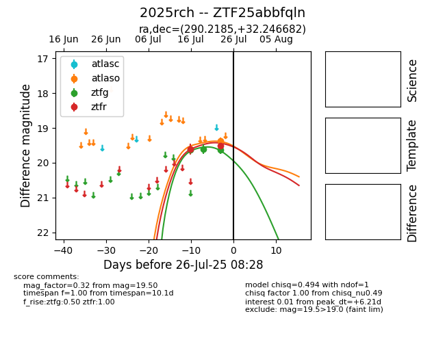

Target 2025rch at 2025-07-26 08:28, see:
FINK: fink-portal.org/2025rch
Lasair: lasair-ztf.lsst.ac.uk/objects/2025rch
ALeRCE: alerce.online/object/2025rch
TNS: wis-tns.org/object/2025rch
YSE: ziggy.ucolick.org/yse/transient_detail/2025rch
alt names
ZTF25abbfqln (ztf,fink)
2025rch (tns,yse)
coordinates:
equatorial (ra, dec) = (290.2185,+32.24668)
galactic (l, b) = (64.9382,+8.44642)
photometry
last atlaso=19.37, ztfg=19.63, ztfr=19.50
1 atlaso, 3 ztfg, 2 ztfr detections
